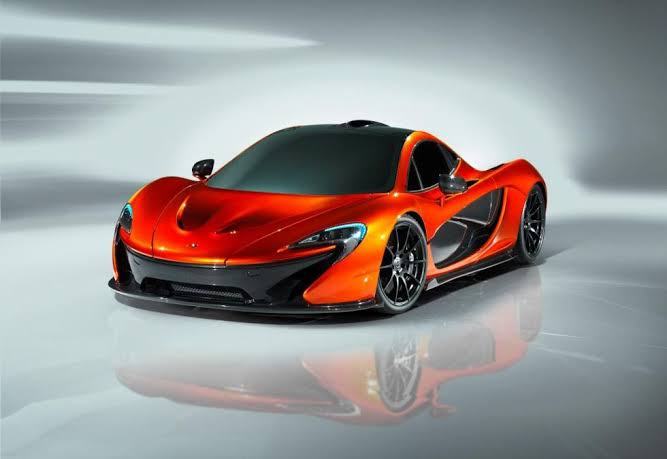
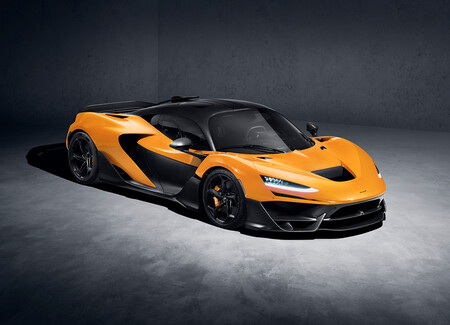

El McLaren P1 es un automóvil superdeportivo híbrido eléctrico enchufable de edición limitada, producido por el fabricante automotriz británico McLaren Automotive de 2013 hasta principios de diciembre de 2015.Tiene carrocería cupé biplaza de dos puertas diédricas, motor central-trasero montado longitudinalmente y tracción trasera.